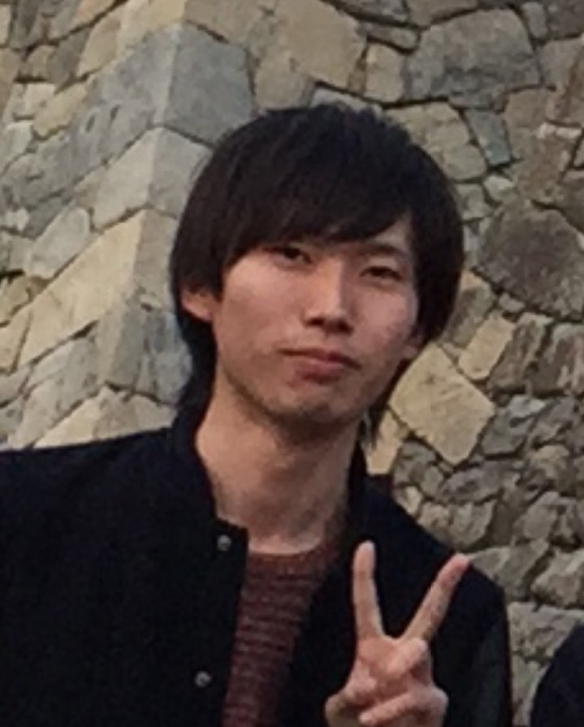

Shin kanouchi

[ Japanese | English ]
Profile
- name: Shin Kanouchi
- Belong: Master Course
Komachi Lab (NLP) / Graduate School of System Design / Tokyo Metropolian Univ.
- Address: 6-6 Asahigaoka, Hino, Tokyo 191-0065, Japan
- Tel: 042-585-8600
- Education:
- 2008.04 - 2011.03: Kunitachi High School, Tokyo.
- 2011.04 - 2015.03: Department of System Design, Tokyo Metropolitan Univ.
- 2015.04 -: Graduate School of System Design, Tokyo Metropolitan Univ.
- Programming Skills: Python(2.7), java, c, objective-C
- Platform: Mac OS X
Research
- Natural Language Processing
- Machine Learning
- Deep Learning
- Machine Translation
- Discourse / Dialog Processing
Activity
-
2014.08.18 - 2014.8.29: Internship @ JXpressJX PRESS Corporation
-
2014.09.02 -: Join Project Next NLP
-
2014.09.21 - 2014.09.23: attend NLP YANS #９
- 2014.10.11: gave a lightning talk about Project Next NLP at DSIRNLP 06
-
2015.03.16 - 2015.03.21: present a paper at NLP2015

- 「風邪にかかったのは誰か？ — 疾患・症状を保有する主体の推定」について発表
- 2015.04.29: gave a lightning talk at DSIRNLP 06
Teaching Assistant
Research Assistant
-
2015.04 - 2015.07: Tokyo Metropolitan Univ. Komachi Lab
Paper
-
paper
-
Shin Kanouchi, Mamoru Komachi, Naoaki Okazaki, Eiji Aramaki and Hiroshi Ishikawa.
Who caught a cold? - Identifying the subject of a symptom.
ACL 2015
-
叶内 晨，小町 守，岡崎直観，荒牧英治，石川 博．
風邪にかかったのは誰か？ — 疾患・症状を保有する主体の推定．
言語処理学会 第２１回年次大会 発表論文集 pp.206-209, March 2015
-
荒牧英治，叶内晨，北川善彬，岡崎直観．
WebNLP: NLP 応用の誤り解析 〜事実性解析と主体解>析を題材に〜．
言語処理学会 第２１回年次大会 ワークショップ, March 2015
Link